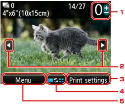

You can view each photo from the memory card or USB flash drive on the LCD and print the desired photo.
You can also specify the number of copies for each photo and add the print job.
For the basic procedure to print from the memory card or USB flash drive, refer also to Printing Photos.
-
Make sure that the machine is turned on.
-
Insert the memory card into the Card Slot or insert the USB flash drive into the Direct Print Port.
The photo selection screen is displayed.
 Important
Important-
You cannot use the memory card and USB flash drive at the same time.
-
If you already insert the memory card or the USB flash drive to save the received faxes automatically, you cannot print the photographs even when the memory card or the USB flash drive which includes the photo data is set.
In this case, set Auto save setting in FAX settings to OFF and remove the memory card or the USB flash drive, then insert the memory card or the USB flash drive contains the photo data.
 Note
Note-
For information on how to insert the memory card/USB flash drive, or information on the types of the memory card compatible with the machine, refer to Printing Photos.
-
If both photo files and PDF files are saved on the memory card/USB flash drive, the confirmation screen to select which file you print is displayed. Select Print photos, then press the OK button.
-
If no printable photo data is saved on the memory card/USB flash drive, Data of supported types are not saved. is displayed on the LCD.
-
If you select Select photo print from card menu, the same screen is displayed as when you set a memory card or USB flash drive.
-
-
Load paper.
-
Specify the settings as necessary.
-
Number of copies
Specify by using the + or - button.
-
Selection photo
Select the photo you want to print by using the

 button.
button. -
Print settings
By pressing the right Function button, the print settings confirmation screen is displayed.
On the print settings confirmation screen, you can change the settings of page size, media type, and print quality and so on.
-
Change view
By pressing the center Function button, you can change the display mode, or select the menu to display the cropping edit screen.
-
Menu
By pressing the left Function button, the card menu screen is displayed.
Note-
If you specify the number of copies for each photo, use the
button to display the photo you want to print and use the + or - button to specify the number of copies when the desired photo is displayed. -
You can also display the screen to specify the number of copies by pressing the OK button when the desired photo is displayed. When the screen to specify the number of copies is displayed, specify the number of copies by using the + or - buttons. Press the OK button to display the photo selection screen.
-
-
Press the Color button.
The machine starts printing.
Note-
To cancel printing, press the Stop button.
-
You can add the print job by pressing the right Function button while printing.
-
Adding the Print Job
You can display photo selection screen again and add the print job (Reserve photo print) while printing photos.
Note-
This function can be used in Select photo print.
-
Press the right Function button when the print progress screen is displayed.
The photo selection screen is displayed.
Note-
While the photo selection screen is displayed, the machine prints the reserved photos.
-
-
Select the photo you want to print and specify the number of copies for each photo.
Note-
The reserved photo icon appears on the photo included in the print job.
-
-
Press the Color button.
The reserved photo is printed next to the photo that has already been started printing.
When you add more print jobs, operate from step 1 again.
Note-
When adding the print job, you cannot change the mode or the print menu, or print from the computer or other devices.
-
When adding the print job, you cannot change the setting for Page size or Type on print settings confirmation screen. The setting is the same as the setting for the photo included in the print job.
-
If you cancel adding the print job, press the Stop button. When the confirmation screen is displayed, select Yes to cancel adding. The machine cancels all print jobs.
-
If there are many print jobs, Cannot add more print jobs. Please wait a while and redo the operation. may be displayed on the LCD. In this case, wait a while, then add the print job.